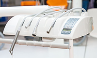

联系电话:020-39281018
联系电话:020-39281018|政策宣导、领导关怀
更多>加快构建整合型医疗卫生服务体系
2017-08-22
明确各级各类医疗机构功能定位。城市三级医院
主要提供急危重症和疑难复杂疾病的诊疗服务，接收
下级转诊，以及承担人才培养、医学科研。
- 1.《国家卫生计生委关于开展医疗联合体建设试点工作的指导意见》 解读 2017-08-22
- 2. 广东省推进医疗联合体建设和发展的实施方案 2017-08-20
- 3. 国家卫生计生委关于开展医疗联合体建设试点工作的指导意见 2017-08-18
|医联体建设
更多>

全面推进医联体建设和发展
2017-08-22
全面启动多种形式的医联体建设试点，三级公立
医院要全部参与并发挥引领作用，综合医改试点省份
每个地市以及分级诊疗试点城市显成效的医联体。
- 1. 医联体建设助力医患双赢 国家行动值得期待 2017-08-22
- 2. 医改办：2020年全面推进医联体建设 形成较完善体系 2017-08-20
- 3. 加强医疗联合体建设和发展的指导意见 2017-08-18
|省人民医院动态
更多>
省人民医院医学院
省人民医院医学院-附属口腔医院是教育部直属重点高等院校的口腔医学教学医院、卫生部部属专科医院及口腔临床专科医师培训基地、广东省-卫生部共建共管医院。遵循口腔医学院、口腔医院、口腔医学研究所三位一体的办院模式，发展成为集教学、医疗和科研为一体的现代化口腔医院。拥有教育部口腔医学一级学科博士学位授权点、口腔医学博士专业学位授权点、博士后科研流动站、广东省重点学科（一级学科）、广东省高等学校名牌专业、广东省高等学校本科特色专业建设点、广东省口腔医学实验教学示范中心、广东省口腔医学重点实验室和广东省牙病预防控制“十二五”医学重点实验室。
|成员单位风采
更多>-
越秀区妇幼保健院 -
越秀区中医医院 -

河源市人民医院 -
惠东县人民医院